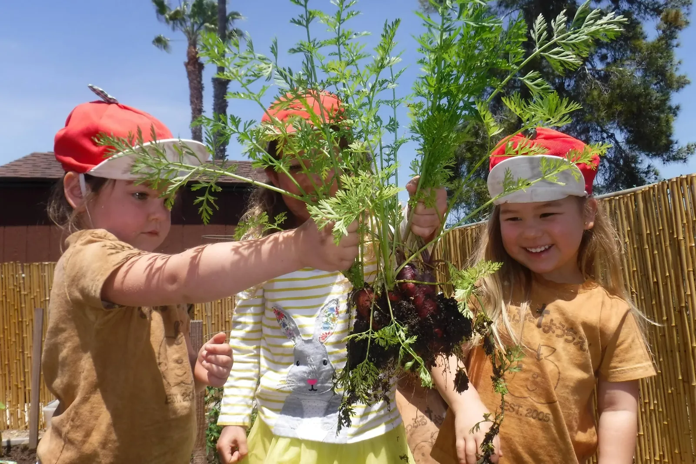
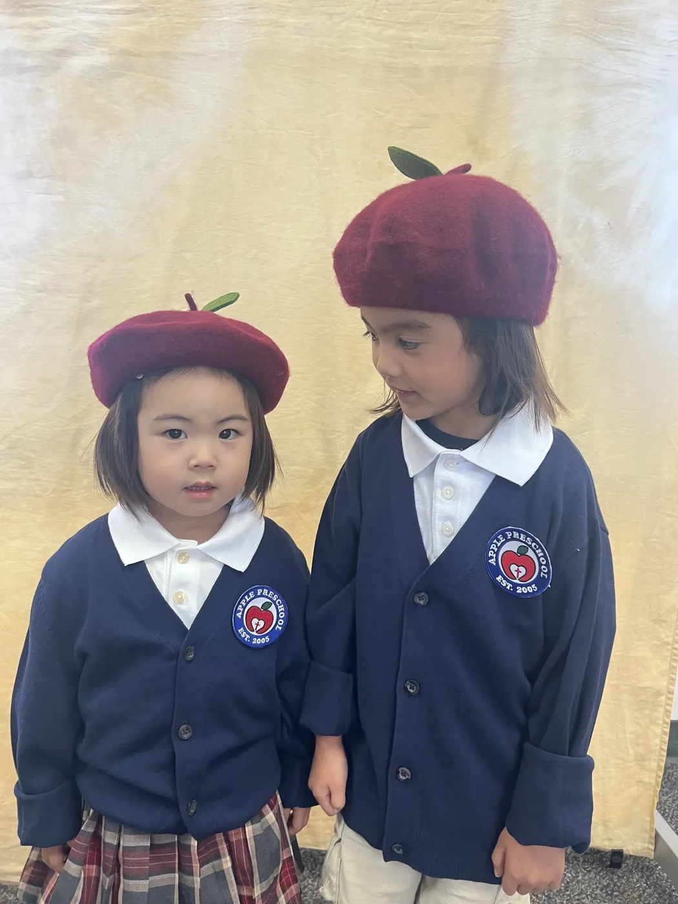
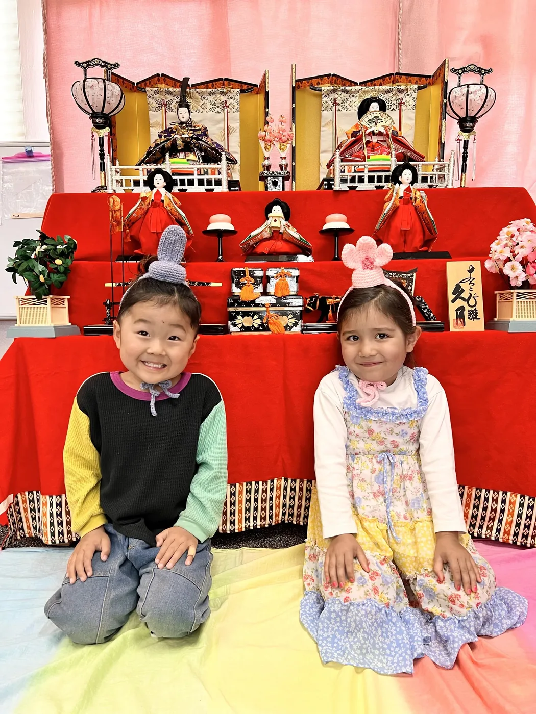
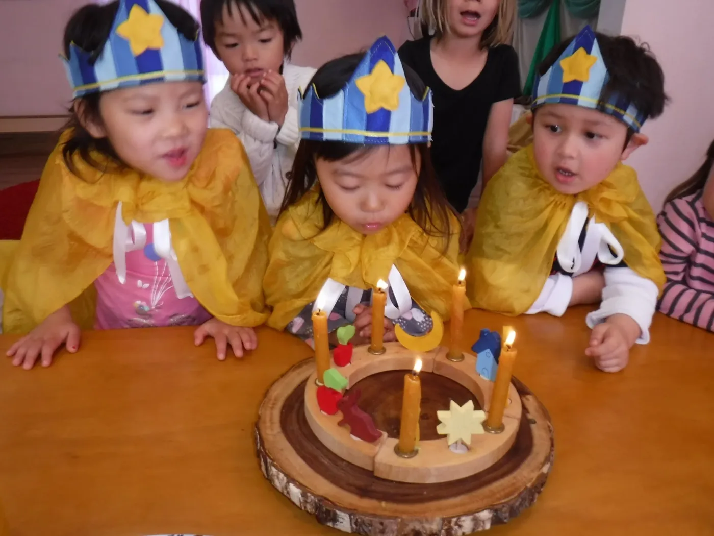
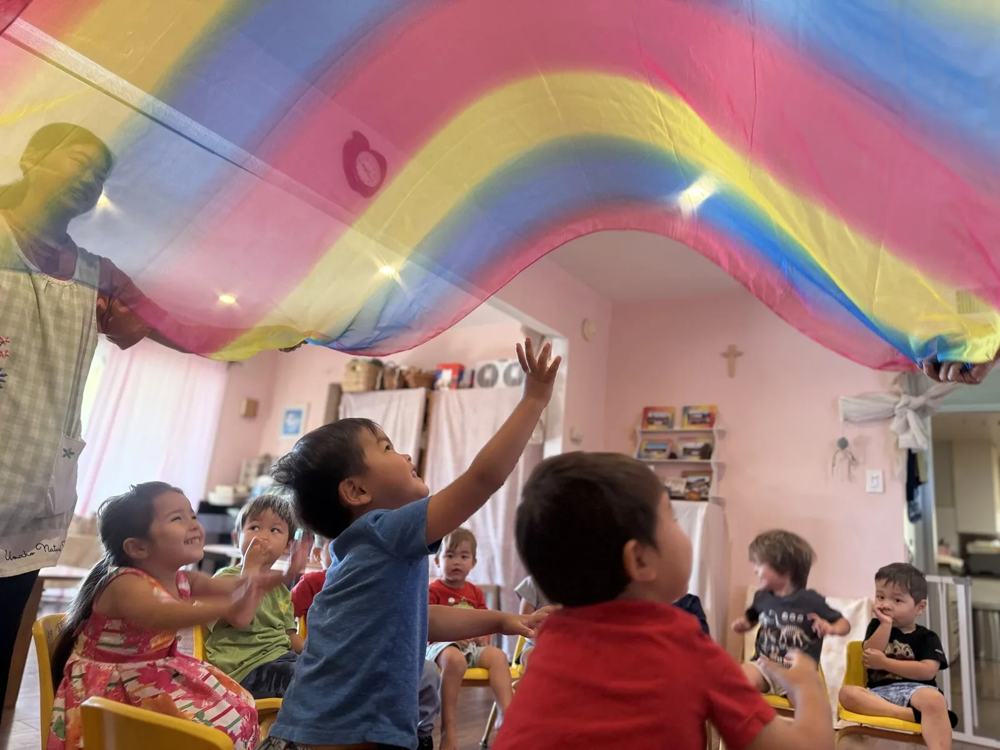
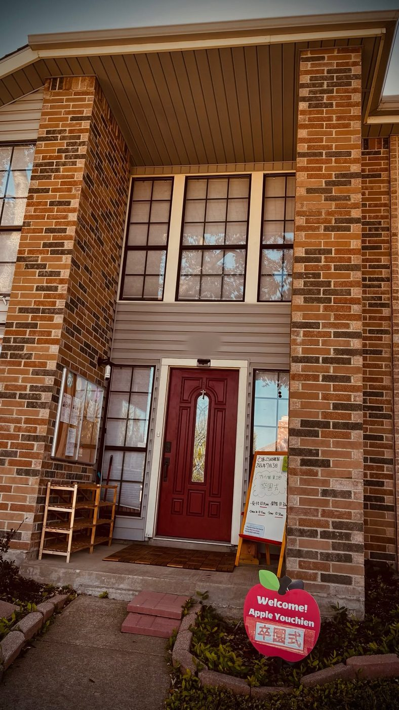

日本語と、日本の一年
ひな祭り、こどもの日、七夕、クリスマス会。アメリカにいながら、日本の行事とことばに一年を通してふれます。日本語がまだ得意でないお子さまには「やさしい日本語保育」の時間を、英語が苦手なお子さまには延長保育を活用した「英語あそび」の時間を用意しています。ことばは、あそびのくり返しのなかで少しずつ根を張ります。
Apple Youchien Plano (あっぷる幼稚園 プレイノ園) is a Japanese-language bilingual preschool in Plano, TX 75025, serving children ages 2.5 to 5, open Monday through Friday from 9:00 to 14:00 — school tours by appointment.
園について
「全てのことを愛をもって行いなさい」（第一コリント16:14）
あっぷる幼稚園（愛称：あっぷるちゃん）は、子ども達一人ひとりの成長の歩みを大切にした、アットホームで愛情溢れる幼稚園です。アメリカ在住の子ども達が、数多くの日本語表現や日本文化にふれ、一年を通してさまざまな日本の伝統行事を体験しています。
子ども達が幸せに包まれて過ごす“第2の我が家”、もう一つのお家。子ども達が豊かな幼少期を過ごせる場所を夢見て、2005年にカリフォルニア州サンディエゴで誕生しました。キリスト教の愛の精神とシュタイナー教育を柱にしています。
2025年10月、テキサス州の認可を取得し、3園目となるプレイノ園が開園しました。日米の幼稚園教諭免許を持つ経験豊かな教諭が、2歳半から5歳＋の縦割り保育で、一人ひとりの歩みに寄りそいます。


園長より
この度は数多くある幼児教育機関の中から「あっぷる幼稚園」をお選びいただき、ありがとうございます。
あっぷる幼稚園は、子ども達が幸せに包まれて過ごす“第2の我が家”、もう一つのお家です。子ども達が豊かな幼少期を過ごせる場所を夢見て、2005年に誕生しました。
園生活を通して、子ども達一人ひとりが、巡りゆく季節と自然を体いっぱいに感じ、子どもらしく自分らしく、ありのままの姿で愛される経験を沢山積んで欲しいと心から願っています。
神様から手渡された子ども達が、どの子もかけがえのない存在として大切に導かれるよう、保護者の皆様と共に歩んでまいります。
あっぷる幼稚園 園長 大野 幸子（ゆきこ）
あっぷる保育
おぼえさせる保育ではなく、体で感じて身につく保育を続けています。三つの柱で、毎日の園生活を組み立てています。
ひな祭り、こどもの日、七夕、クリスマス会。アメリカにいながら、日本の行事とことばに一年を通してふれます。日本語がまだ得意でないお子さまには「やさしい日本語保育」の時間を、英語が苦手なお子さまには延長保育を活用した「英語あそび」の時間を用意しています。ことばは、あそびのくり返しのなかで少しずつ根を張ります。

にじみ絵をはじめ、季節ごとの手しごとを楽しみます。紙の上でにじみ広がる色の変化にじっと見入る時間は、シュタイナー教育を取り入れたあっぷるならではのアートの時間です。できあがりよりも、手を動かし、感じる過程そのものを大切にしています。ご家族が参加できるファミリーイベントとして開くこともあります。

季節の花や野菜を育てる小さな菜園「あっぷるガーデン」があります。畑仕事やお庭のお手入れを通して、子どもたちは土と水と光にふれ、いのちを育てる手ざわりを知ります。育てた野菜は月ごとのクッキングで使い、自分たちで料理して味わいます。食べものを大切にする心は、言葉より先に手から伝わります。
ある一日
2025年度に公表されている保育時間をもとにした一例です。急がず、自分で選び、じっくり過ごす。そんな一日の流れです。


※ 2025年度の公表時間にもとづく一例です。2026年度の正式な一日の流れは、確認のうえ掲載します。
四季の色
教室には季節のテーブルがあり、外には菜園があります。行事は暦を追いかけるためではなく、その季節にしかない色や手ざわりに出会うためにあります。
ひな祭り、こどもの日。ちらし寿司を作り、雛人形をこしらえます。あっぷるガーデンに種をまく季節です。
七夕。短冊に願いを書き、笹に結びます。菜園の野菜が育ち、月のクッキングの材料になります。
実りの季節。土に触れて収穫し、玉ねぎの皮で草木染めに挑戦します。色が変わる瞬間に、歓声が上がります。
クリスマス会で歌をうたい、新年にはお雑煮と書き初め、お正月あそび。一年の終わりと始まりを、日本のかたちで。
※ 行事の一例です。年度や園により内容が変わります。
クラス
月水 ／ 月水金 ／ 月〜金（にじ＋ほし）
火木 ／ 火木金
保育前 8:30〜 ／ 保育後 〜17:00
※ 2025年度のクラス編成です。2026年度の詳細はお問い合わせください。
入園について
はじめての園選びでも安心して進められるよう、入口を一つにまとめました。
お電話・メール・お問い合わせフォームから、園見学や入園のご相談をお申し込みください。
園の雰囲気や保育の内容をご覧いただき、お子さまの様子やご希望を伺います。
空き状況・クラス・費用・必要書類をご案内したうえで、お申し込みいただきます。
持ち物や初日の流れをご案内し、お子さまのペースに合わせて園生活を始めます。
※ 曜日・定員・空き状況・料金は、2026年度の正式情報を確認のうえ掲載します。
保護者の皆さまが入園前に気になる生活面のことを、一か所にまとめました。
お昼をはさむ時間帯のため、お弁当をご持参いただきます。おやつの時間も、お友だちと一緒に過ごします。
お着替えやお手拭きなどを想定しています。正式な持ち物リストは、入園のご案内に合わせて掲載します。
食物アレルギーや持病など、気になることは見学・入園相談の際に事前にご相談いただけます。
少人数・アットホームな環境で、一人ひとりに目が届く保育を大切にしています（詳しいご案内は準備中です）。
※ 給食・持ち物・安全衛生の詳しいご案内は、内容を確認のうえ順次掲載します。
園での時間
ことばだけでは伝わりにくい園の空気を、実際の写真でお届けします。

保護者の声
プレイノ園は2025年10月に開園したばかりの園です。保護者の皆さまからいただいた声は、掲載の許可をいただいたうえで、このページでご紹介していきます。園の様子は、日々のInstagramでもご覧いただけます。
Instagram で園の様子を見る関連ニュース・掲載
プレイノ園の開園や新年度入園について、地域のメディアに取り上げていただいています。

アクセス
日本語幼稚園・プリスクール（保育園）をお探しのご家庭へ。プレイノ（75025・Cross Creek）を中心に、フリスコ・マッキニー・アレン・ダラス近郊からお通いいただけます。
※ 詳しい所在地は、園見学のご予約時にご案内しています。
よくある質問
2歳半から5歳＋のお子さまをお預かりしています。年齢で区切らない縦割り保育のため、年上の子が年下の子を自然に気づかう関わりが生まれます。キンダー年齢のお子さまについては、ご事情をうかがったうえでご相談に応じています。
保育日は月曜日から金曜日、時間は9時から14時までです。お昼をはさむ時間帯のため、お子さまはお弁当やおやつの時間も園のお友だちと一緒に過ごします。保育前後の延長保育もご用意しています。
週2日の保育からご参加いただけます。入園の優先順位は週5日、週3日、週2日の順となりますので、ご希望の日数がある場合は早めにご相談ください。ご家庭の事情に合わせて通い方を一緒に考えます。
はい、日本語がまだ得意でないお子さまには「やさしい日本語保育」の時間を設けています。歌やあそび、日々のくり返しのなかで、ことばは少しずつ自然に身についていきます。最初から話せることを前提にはしていませんので、安心してご相談ください。
はい、英語が苦手なお子さまには延長保育の時間を活用した「英語あそび」の時間があります。無理に切り替えるのではなく、あそびのなかで英語の音とリズムに親しむところから始めます。ことばと文化の両方を自然に身につけられるよう支えていきます。
保育前の「朝ケア」（8時半から）と、保育後の「おのこりさん」（17時まで）をご用意しています。お仕事や下のお子さまの都合に合わせてご利用いただけます。ご利用の条件や回数については、お問い合わせの際にご案内します。
ひな祭り、こどもの日、七夕、クリスマス会など、日本の伝統行事を一年を通して楽しみます。園の菜園「あっぷるガーデン」でのお世話や、月ごとのクッキング、草木染めなどの手仕事の会もあります。アメリカにいながら日本の四季を体で感じられる時間を大切にしています。
はい、途中入園も受け付けています。ただしクラスの定員がありますので、ご希望の時期が決まっている場合はお早めにお問い合わせください。空き状況をお調べしてお返事します。
園見学は随時受け付けています。お子さまの様子をゆっくり見ていただきたいので、事前にご予約のうえお越しください。お電話またはこのページのお問い合わせフォームからご連絡いただけます。
はい、2005年にカリフォルニア州サンディエゴで生まれたあっぷる幼稚園の3園目として、2025年10月にプレイノ園を開園しました。テキサス州の正式な認可を取得しています（Lic #1822387）。保育の考え方はそのままに、プレイノの子どもたちとご家庭に合わせた園づくりを進めています。
お問い合わせ
園見学・入園のご相談・途中入園の空き状況など、日本語でお気軽にご連絡ください。2〜3日以内にお返事します。